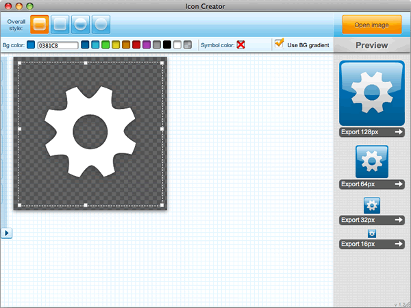
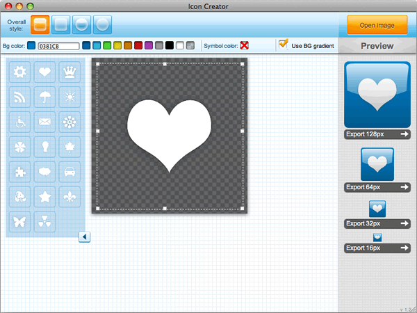
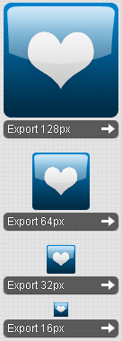
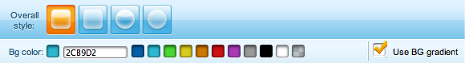
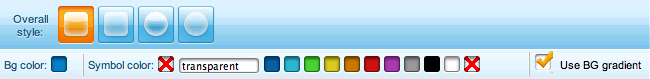
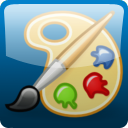
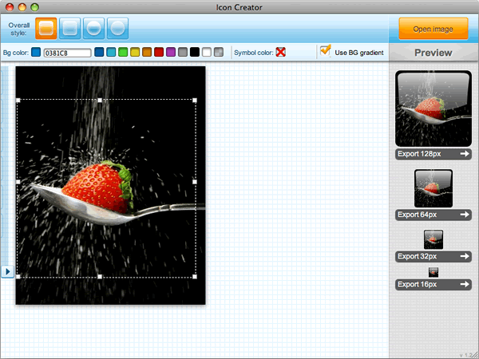

Icon Creator tutorial
Table of contents:
Introduction
There are many tasks in web development that are tedious and time consuming but absolutely essential to ensure that the product comes across as professional and looks finished. Icon creation is one of them. An application with a badly-designed icon will look amateurish to its potential users, no matter how fantastic the underlying functionality is.
This is never more true than in the case of Opera widgets. Not only are icons displayed in a number of important places (status bars, managers, widget lists), creating that all-important first impression about your widget, but a good icon is also a major criteria for acceptance at widgets.opera.com.
That's right. No icon or a bad icon = no acceptance.
The Icon Creator has been created to ease the pain of creating widget icons, saving you a lot of time whether you are a graphic designer or a developer. Even better, the Icon Creator is itself a widget, meaning it's easy to install and use.
Note: there is a widget icon tutorial available which describes how to make a widget icon based on ready-made templates. This is a useful reference but there is still a certain amount of graphic design skill and work needed when going down this route. The Icon Creator widget abstracts a lot of that work away from you.
Getting started
The application is really simple and straightforward — see Figure 1 for an overview of the UI.

Figure 1: The start-up window of the Icon Creator.
In the following sections I'll go through two real-world examples that will cover most of its functionality. Let's begin — first of all I'd like you to download and install the Icon Creator. Keep it open as you read through the rest of the article.
Example 1: Creating an icon with a ready-made motif
There are some pre-installed motifs included in the Icon Creator. The cogwheel you see when you open the application is just one of them. See the arrow button lurking on the left hand side of Figure 1 ()? Click it to have the pre-installed motifs slide into view, as seen in Figure 2.

Figure 2: Pre-installed motifs.
When you've chosen one you like, you can save your icon in different sizes using the Export buttons on the right of the Icon Creator (see Figure 3). Icons are saved in .png format.

Figure 3: The icon export buttons.
You can also easily alter the widget's background color and motif/symbol color, turn background gradients on and off, and select from four overall icon styles using the controls shown in Figure 4.

Figure 4: The main icon toolbar.
First of all, try clicking on the color controls to the right of the Bg color
text — these will allow you to change the color of the icon background — see Figure 5 for an example. Figure 5 also illustrates the difference that the Use BG gradient checkbox makes.
Figure 5: Icons usually look better with a background gradient.
There are three ways you can define a new color:
- Choose one of the predefined colors in the toolbar.
- Type the color in hex format in the input box.
- Use the color picker that pops up when you click or focus on the input box.
Now try clicking on the Symbol color
text — this will result in the color controls for the symbol/motif being displayed, as seen in in Figure 6.

Figure 6: The main icon toolbar with Symbol color controls displayed.
These controls work just the same as the background color controls. Altering them results in a change in the color of the symbol/motif, as seen in Figure 7.
Figure 7: Changing the icon symbol color.
At this point, take a minute or two to have a play with these controls before moving on. You'll find them pretty intuitive and easy to grasp.
Example 2: Loading a motif from a file
This is all well and good, but it is likely that you won't want to use one of our preset motifs. You might already have your own brand icon to use, or maybe you've found a free one online that suits your widget. I'm not a great designer myself, so I'm going to take advantage of the fantastic Open Icon Library. I particularly liked the icon shown in Figure 6.

Figure 6: Example motif from the Open Icon Library.
Let's make a widget icon from this (feel free to use one of your own icons if you prefer). Click the Open Image button in the top right of the Widget Icon Creator interface and select your chosen icon image file in the file chooser dialog box that pops up.
The moment your image is opened, your icons will be created in the preview section of the interface, ready to be saved! Their dimensions are set to the four commonly used sizes seen in Figure 7: 128 x 128, 64 x 64, 32 x 32 and 16 x 16 pixels.

Figure 7: Icon previews, ready to be saved.
Again, have a go at defining different icon styles using the available controls. When you're done, save your icons to somewhere suitable on your hard disk again using the Export buttons.
Example 3: Creating an icon from a picture
What if you can't find a motif that satisfies you? What if you want your icon to be more unique? You can use any picture you like — just load it into the Widget Icon Creator using the Open image button as in the previous example (the icon creator supports .png, .jpg, .gif and .tiff images).
I chose a photo by Carlos Porto that he kindly published on the http://www.freedigitalphotos.net site — see Figure 8.

Figure 8: Making an icon from a custom picture.
One important tool we haven't yet covered is the crop square — this is the dashed square with the small white boxes (handles) at regular intervals around its edge, as seen in Figures 1, 2, and 8. This lets you grab exactly the part of the image you want to use for your icon. It has two functions:
- You can move the crop square around the image by holding down the left mouse button inside the square and dragging it.
- You can resize the crop square by holding down the mouse button over any of the white handles around the edge and dragging.
Note that unless your picture uses transparency, background tools (color and gradient) will have no effect.
Adding icons to your widget
In order for your widget to use the icons you've made, you need to put them in your widget package and add their paths to the <widget> element in your config.xml file:
<widget>
...
<icon>icons/128_widget_icon_mywidget.png</icon>
<icon>icons/64_widget_icon_mywidget.png</icon>
<icon>icons/32_widget_icon_mywidget.png</icon>
<icon>icons/16_widget_icon_mywidget.png</icon>
...
</widget>Summary
So that's it — our tour of the Icon Creator has come to an end. I hope you found it useful. There are only two things I'd like to re-emphasize:
- It's very important for your widget to have proper icons.
- The Icon Creator helps you make nice icons even if you're no graphic designer.
So, no excuses any more! See you at widgets.opera.com.
This article is licensed under a Creative Commons Attribution-Noncommercial-Share Alike 3.0 Unported license.
Comments
The forum archive of this article is still available on My Opera.
No new comments accepted.